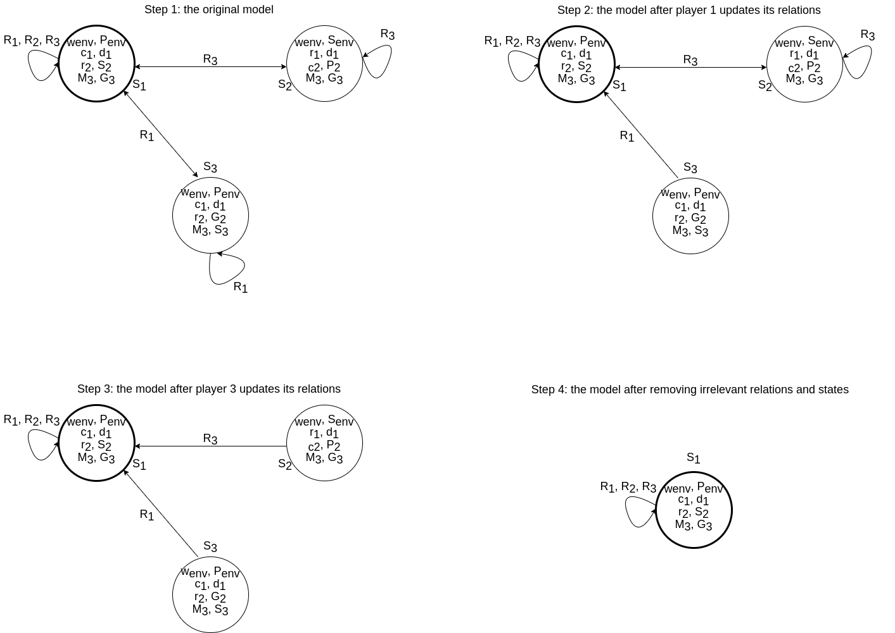

We will now show examples of a (illustrated) Kripke model.
We will see how players base their decisions on this model and how the model is updated as the game of Clue progresses.
For this purpose, and to keep the explanation from being unnecessarily elaborate, we temporarily assume that there are four weapons and four suspects.
We remove axe, lead and handgun from the list of weapons.
We use the following abbreviations:
candle is c, dagger is d, rope is r, wrench is w, Scarlet is S, Mustard is M,
Green is G and Plum is P.
Now see Figure 1, which shows a Kripke model of just 3 states (the total number of states would be much greater) and their relations.
The true state is shown in the top left.
Fig.1 - Kripke model with 3 states and its relations.
As far as relations go, the envelope does not have any relations,
since we do not care about potential ways that the envelope can have the same card
and about what the envelope `knows'. For the players, each player has relations
from a state to another state if that players has the same cards in both states.
From the previous example, player 1 has the candlestick and dagger in that state,
so from that state can reach any state where they also have the candlestick and dagger.
Now consider figure 1 and the relations that are shown there.
Agent 1 can reach state 1 and 3. Agent 2 can only reach state 1. Lastly, agent 3
can reach state 1 and 2. In our model, we decided to only
keep reflexive relations if the agent considers that state possible, since this
reduces the amount of relations. A state is considered possible by an agent if
the cards of that agent in the state correspond to the cards the agent actually has.
As an example, agent 2 only has a reflexive relation in the top left state.
The Kripke model is updated during every time step.
Firstly, using public announcement when not showing a card.
Secondly, using a private announcement when showing a card.
Thirdly, the additional rules as described in the previous subsection are used.
A player knows the cards in the envelope and will guess the cards in the envelope
when all possible states that agent can reach have the same cards in the envelope.
What happens during a turn
Asking for cards: showing a card
[TODO: explain this and work out using an example.]
During a turn a player can ask another player for 2 cards: a weapon and a suspect.
If this player has one of those cards,
this card will be shown only to the player who asked for the card.
This is a private announcement and action models can be used to show the update of the Kripke model after showing a card.
We will now consider two examples of what happens when agent 2 shows a card to agent 1.
The difference between these two scenarios is the amount of knowledge agent 3 has.
Fig.2 - Kripke model showing updates of the model after player 2 shows a cards and player 3 can
determine the card.
Consider figure 2 and the following scenario: Player 1 asks player 2: {dagger, Scarlet}.
Player 2 has Scarlet, and thus shows this card. Agent 3 already knows that agent 1 has the dagger.
Step 1 shows the original model. Step 2 shows the model after agent 1 has updates its
relations. Agent 2 has shown agent 1 the Scarlet card, so agent 1 removes all relations to states where
player 2 does not have Scarlet, since those states are no longer possible. As can be seen in figure 2,
this corresponds to agent 1 removing the relation from state 1 to state 3 and the reflexive relation of
state 3. In step 3, player 3 updates its relations. This figure considers the scenario where agent 3 already
knows that agent 1 has the dagger. Since agent 1 asked for {dagger, Scarlet} and was shown a card, it must
be the case that agent 2 has Scarlet. So, agent 3 removes all relations to states where player 2 does not
have Scarlet. In the last step, we remove one-sided relations, since those start from a state that is
impossible for the respective agent and therefore are not relevant for finding the content of the envelope.
Moreover, states without relations are removed to clarify which potential states are still possible.
In this small example, only the actual state remains after all agents have updated their relations.
Fig.3 - Kripke model showing updates of the model after player 2 shows a cards and player 3
cannot determine the card.
For figure 3, player 1 asks player 2: {candlestick, Scarlet}. Player 2 has Scarlet, and thus shows this card.
Agent 3 does not know that agent 1 has the candlestick. More specifically, agent 3 considers state 2 as
a possibility and here agent 2 has the candlestick.
Step 1 and 2 are the same as for the scenario in figure 2, because agent 1 still sees the same card and updates
the same relations. During step 3, agent 3 updates its relations while knowing
less information than in the previous scenario. Agent 3 does not know that agent 1 has the candlestick, but
can still gather some information from agent 2 showing a card to agent 1. More precisely, agent 3 knows
that agent 2 has either the candlestick or Scarlet card or both. So, agent 3 can remove relations to all states
where player 2 does not have the candlestick and does not have Scarlet. In this example, this corresponds
to keeping all existing relations, since all relations of agent 3 point to states where player 2 has either
the candlestick or Scarlet. For step 4, irrelevant relations and states are removed again. Here, more
potential states are still considered possible by agent 3 than only the actual state.
Asking for cards: not showing a card
[TODO: explain this and work out using an example.]
During a turn a player can ask another player for 2 cards: a weapon and a suspect.
If this player does not have those cards, then no card will be shown.
This is a public announcement and action models can be used to show
the update of the Kripke model after not showing any card.

Fig.4 - Kripke model showing updates of the model after player 2 does not show a card.
Consider figure 4 and the scenario: player 1 asks player 2 {candlestick, Green}. Player 2 does not have
these cards and hence cannot show any cards. Step 1 shows the original model. Step 2 and 3 show respectively
agent 1 and 3 updating their relations. Both of them know that agent 2 does not have the candlestick and
does not have Green, so they can remove any states where agent 2 has the candlestick and any state where
agent 2 has Green. For agent 1 this corresponds to removing relations to state 3, because here agent 2 has
Green. For agent 3, relations to state 2 are removed, since here agent 2 has the candlestick. In step 4
all irrelevant relations and states are removed, leaving only the actual state.
'Guessing' the content of the envelope
If a player knows the content of the envelope,
then this player will `guess' the content of the envelope.
If this player is correct, they win the game and the game ends.
Updating the model using the Clue rules
After showing/not showing any cards, the Kripke model of players is updated and the turn of that player ends.
More knowledge might be part of the system than you might initially think.
As explained in the formal rules section above, a player might determine which card was shown using logic.
However, in our Kripke model this is already implemented without adding extra rules.
Consider for example the rule: if one player has a certain card, then another player cannot have that card.
In the Kripke model, if a player knows that some player has a card, then all states will be removed where
that player does not have the card. Hence, all states where another player has the card are removed, so
another player cannot have the card in question.
The rules can be worked out and after checking all of them, we came to the conclusion that our Kripke
model with public and private announcements already handle all rules discussed.